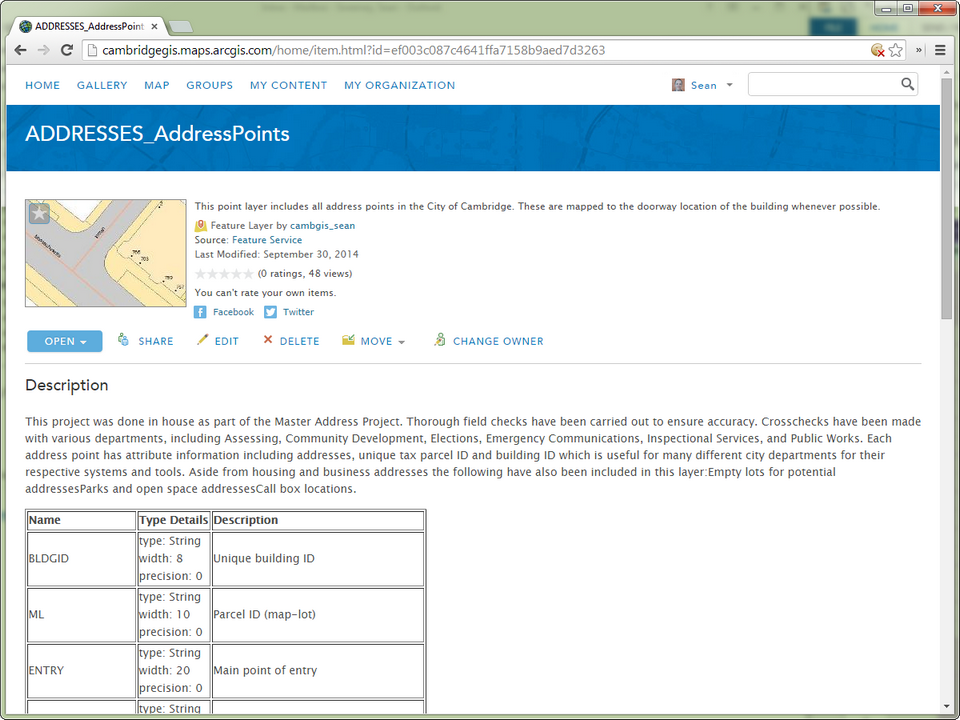
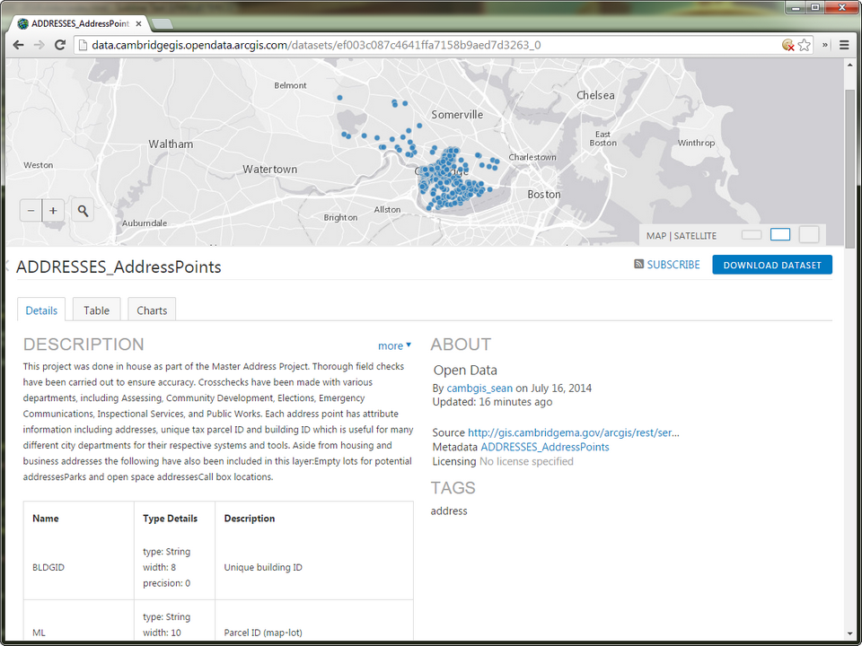
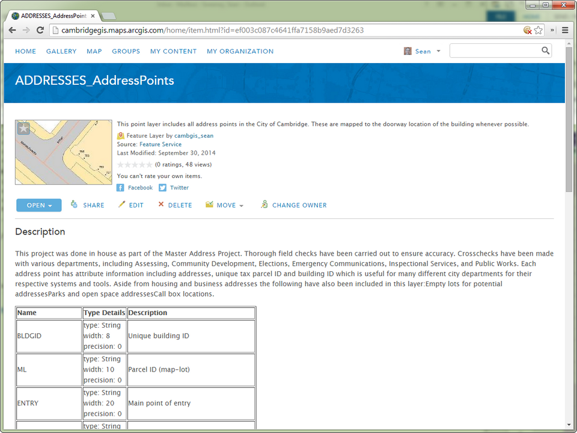
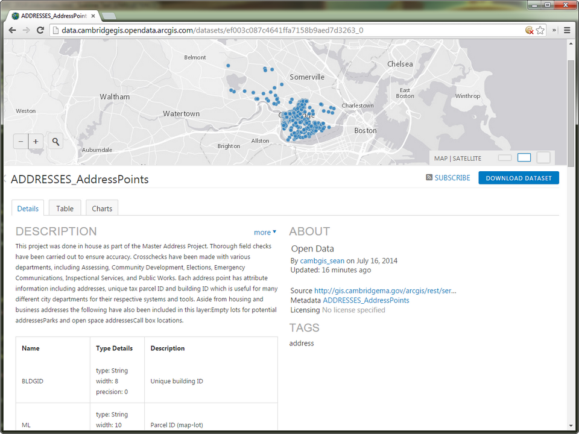
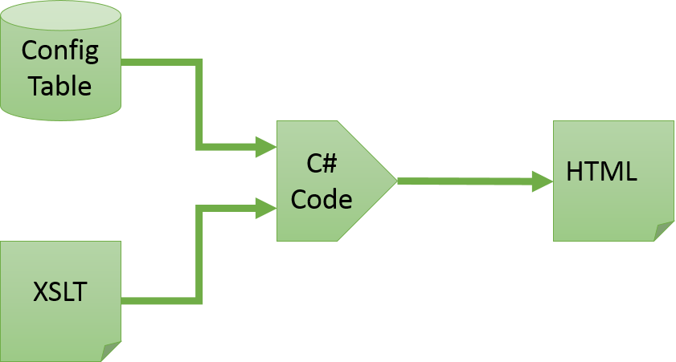
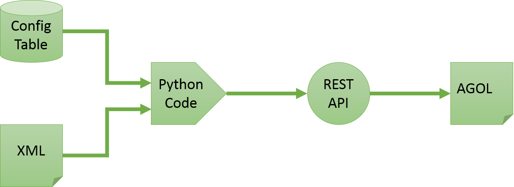

One Metadata to Rule Them All
NEARC - Groton, CT
October 7, 2014
Sean Sweeney, GIS Programmer Analyst
Rachel Sheketoff, Web Developer
City of Cambridge, MA


 





Metadata XML
...
This data set derives from several sources. The...
Updated parcel layer with the 2014 land use data.
...
ML
Map-Lot: This a unique parcel identifier found in...
...
GitHub Export
installDir = arcpy.GetInstallInfo("desktop")["InstallDir"]
translator = installDir + "Metadata/Translator/ARCGIS2FGDC.xml"
source = database + schema + featureClass
if featureDataset != '':
source = database + schema + featureDataset + "/" + source
dest = dest_root + "\\" + dest_path + "\\" + dest_name
if not arcpy.Exists(source):
print "ERROR: " + source + " Not Found"
else:
arcpy.gp.esri2open_esri2open(source, dest + ".geojson", "Default")
arcpy.ExportMetadata_conversion(source, translator, dest + ".xml")

Data Dictionary
Configuration Table
| Source Dataset | Source Name | Destination Name | Destination Path | On GitHub | In Data Dictionary | Updated |
|---|---|---|---|---|---|---|
| CDD_Zoning | ZoningDistricts | CDD_ZoningDistricts | CDD\Zoning_Districts | 1 | 1 | 1 |
| LANDMARK_ElderlyFacilities | LANDMARK_ElderlyFacilities | Landmark\Elderly_Facilities | 1 | 1 | 1 | |
| RECREATION_CommunityGardens | RECREATION_CommunityGardens | Recreation\Community_Gardens | 1 | 1 | 1 | |
| UrbanForestry_Trees | DPW_StreetTrees | DPW\Trees | 1 | 1 | 1 |
SQL Access to SDE Metadata
SELECT Documentation
FROM sde.GDB_ITEMS
WHERE PhysicalName LIKE '%.RECREATION_OpenSpace'
Sample of eXtensible Stylesheet Language Transformation (XSLT) File
data:image/jpeg;base64,
350px
...
...
Transformation in C#
//do the transformation
XslCompiledTransform xslt = new XslCompiledTransform();
xslt.Load(Settings.GetSetting("GisDataDictionary.XslFileLoc"));
StringWriter sW = new StringWriter();
using (XmlWriter xmlW = XmlWriter.Create(sW, xslt.OutputSettings))
{
xslt.Transform(xmlR, null, xmlW);
returnValue = sW.ToString();
}
ArcGIS Online
AGOL - show REST calls used
Updating the item
def updateItemDescription(userID, folderID, itemID, portalURL, token=None, snippet, tags):
'''Update the item descriptive information.'''
params = {
'snippet': snippet, # Summary
'description': description, # Includes HTML attrib table
'tags' : tags,
'token' : token,
'f': 'json'
}
requestURL = portalURL + '/sharing/rest/content/users/' + userID + '/' + \
folderID + '/items/' + itemID + '/update'
print requestURL
f = urllib.urlopen(requestURL, urllib.urlencode(params));
results = f.read();
print results
return results

More Info
Me
Email: ssweeney@cambridgema.gov
Twitter: @hiker4k
GitHub: seansweeney
These Slides: http://bit.ly/nearc2014sweeney
Us
Web: http://cambridgema.gov/gis
Twitter: @CambridgeGIS